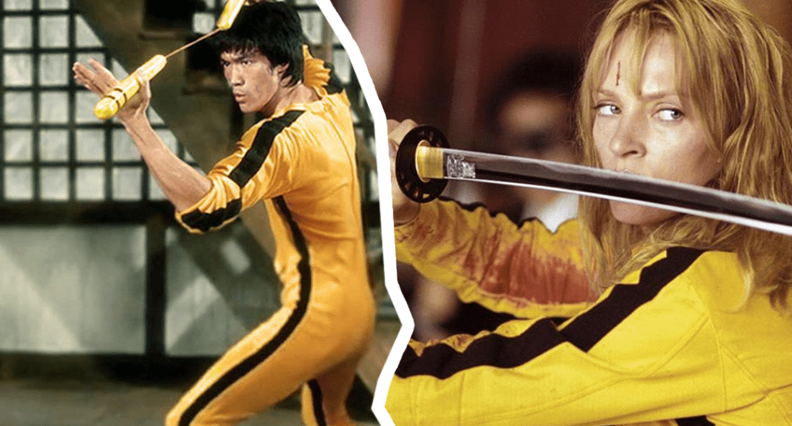

Guiños a Bruce Lee en Kill Bill
El traje que luce Uma Thurman al final de Kill Bill vol.1 es uno de los más claros homenajes a Bruce Lee, ya que este vestía uno muy similar en The Chinese Connection y Fist of Fury.
"Uma odiaba el traje amarillo, lo odiaba. Yo no lo entendía. Ella decía que lucía como una paleta de banana. No tenía idea de quién era Bruce, prácticamente. Finalmente tuve que mostrarle Game of Death, recién ahí lo entendió."Quentin Tarantino
